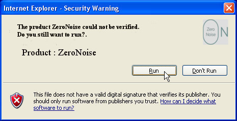
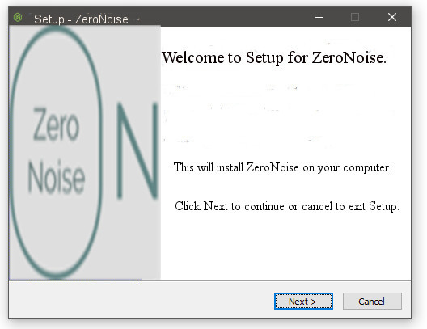
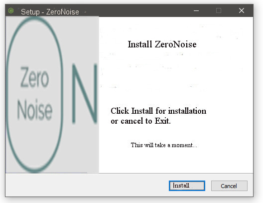
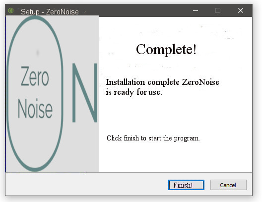

Go to home
Go to home
Go to home
Go to home
This is and quick and easy way to install the ZeroNoise program. If you havent pressed the download button at the front page your able to click on this download button to the right. Follow these steps and you be in good hands. At the bottom you will find some good tips for using ZeroNoise.
Step 1. Press the download button

Step 2. Press run to start up the program
Step 3. Press next in the installasjon
Step 4. Press install to complete installsjon
Step 5. Press finsih and ZeroNoise is ready
Now your ZeroNoise program is running, you can go to options in the program to set your personal preferens to the program. Or it will go to default mode. Which preventes lot of the high volums on the browser and puts up a danger sign if the program thinks that the next page will put you at risk for epileptic seizure. If you want to enter the website anyways you can click on the danger sign and proceed. When the program is running it will be displayed on icon desktop on your computer. If you want to change the settings you could right click the icon and go to options. Also you could exit the program in an easy way just right click the icon and choose shut down.